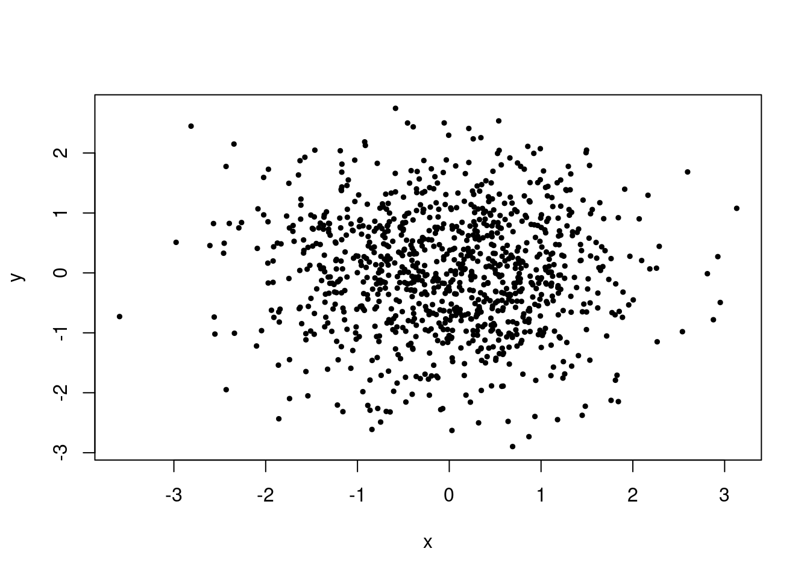

Code
library(JWL)
dat <- pearson
plot(dat,
pch = 19,
cex = 0.3,
xlab = "Father's height (inches)",
ylab = "Son's height (inches)",
main = "Pearson's height data from 1903")
abline(0,1, lty = 2)We ended the last chapter with Pearson’s historical data on the heights of fathers and sons to introduce the concept of a scatter-plot.
library(JWL)
dat <- pearson
plot(dat,
pch = 19,
cex = 0.3,
xlab = "Father's height (inches)",
ylab = "Son's height (inches)",
main = "Pearson's height data from 1903")
abline(0,1, lty = 2)We discussed how we could use the positive association in this scatter-plot to predict the height of a son from the height of the father. One intuition might be to use the straight dashed line that run along the diagonal. If we would use this line as a model for prediction, each adult son would be predicted to show the same height as his father. But we can do better than that and improve on this choice.
For any straight line we might choose, each data-point will give rise to a residual which is the size of the error were we to use the line as prediction.
plot(dat,
pch = 19,
cex = 0.3,
xlab = "Father's height (inches)",
ylab = "Son's height (inches)",
main = "Pearson's height data from 1903")
abline(0,1, lty = 2)
abline(reg = lm(dat$Son ~ dat$Father), col = "red", lwd = 2)
points(63.1, 74.3, pch = 19, col = "red")
lines(c(63.1, 63.1), c(66.3264, 74.3), col = "red", lty = 2)Suppose for instance that we took the father with a height of 63.1 inches and predicted the height of the son according to the model described by the red line, we would have predicted the son to have height 66.3 inches. In the data the son of the father with height 63.1 inches is in fact 74.3 inches. This is marked out as the red point in the plot. The length of the dashed line from the red point to the red line is the residual.
The idea of prediction using models of straight lines is to make these residuals small. We will learn a method how to do this. This approach to prediction is called regression and we will learn how it works in this chapter.
In the beginning of this lecture we studied the example of infant mortality. Let us first study a scatter plot which plots the number of children per woman against the infant mortality rate across countries in the world in the year 2000.
library(JWL)
dat <- infant_mortality_data
dat_2000 <- dat[dat$Year == 2000, ]
plot(dat_2000$Children, dat_2000$Mortality,
yaxt = "n",
xlab = "Children per woman",
ylab = "Infant mortality",
pch = 19,
cex = 0.5)
axis(2, at=pretty(dat_2000$Mortality), lab=paste0(pretty(dat_2000$Mortality) * 100, " %"), las=TRUE)Notice the positive association in the data. The scatter of points is sloping upwards, indicating that a higher number of children per woman tends to go along with a higher infant mortality rate.
data <- child_mortality_average_schooling_of_women
data_2020 <- data[data$Year == 2020, ]
plot(data_2020$YEW15, data_2020$MR,
xlab = "Average years of schooling for women",
ylab = "Child mortality",
pch = 19,
cex = 0.5)This is an example of a negative association.
Example of no correlation:
x <- rnorm(1000)
y <- rnorm(1000)
plot(x,y,
pch = 19,
cex = 0.5)